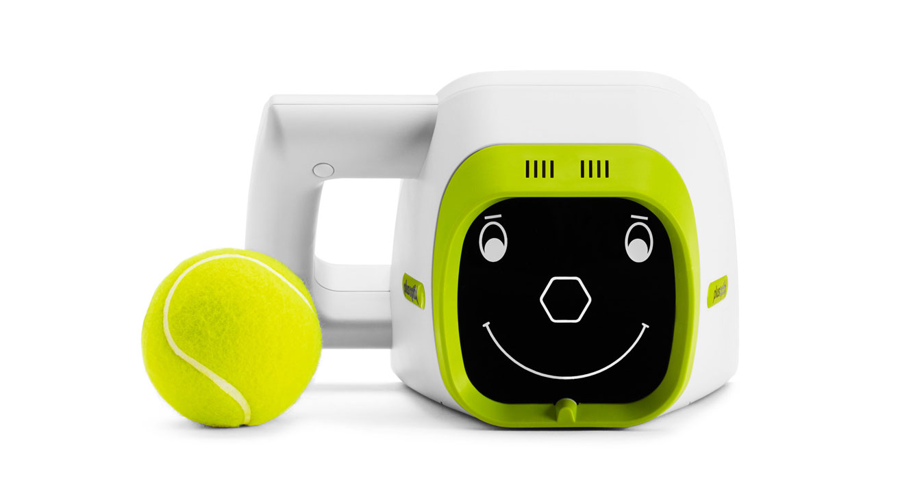

Matériel spécifique d'examen pédiatrique

Confort
- Adaptabilité aux Enfants : Le matériel d'examen pédiatrique est conçu pour être adapté aux enfants, avec des fonctionnalités ergonomiques et des dispositifs pour minimiser l'anxiété et assurer le confort.
- Taille et Accessoires : Il est souvent équipé de supports de menton et de front ajustables pour s'adapter aux jeunes patients de différentes tailles, assurant une position stable et confortable pendant l'examen.
- Ambiance Agréable : Les dispositifs peuvent être conçus avec des éléments visuels ou ludiques pour créer une ambiance rassurante et encourageante pour les enfants pendant l'examen.
Précision
- Technologie Adaptée aux Enfants : Les réfracteurs automatiques pour enfants utilisent des technologies spécifiquement adaptées à leur anatomie oculaire et à leurs besoins visuels, permettant des mesures précises même avec une coopération limitée.
- Mesures Objectives : Ils intègrent des capacités de mesures automatiques qui réduisent la dépendance aux réponses subjectives, assurant ainsi des résultats précis et reproductibles.
- Détection Précoce : Grâce à leur précision, ces dispositifs peuvent détecter des anomalies visuelles chez les enfants dès leur jeune âge, facilitant une intervention précoce si nécessaire.
Sécurité
- Non-Invasivité : Comme la plupart des équipements ophtalmologiques modernes, les réfracteurs automatiques pour enfants sont conçus pour être non invasifs, ne nécessitant pas d'incisions ni d'interventions qui pourraient présenter des risques pour la santé des enfants.
- Conformité aux Normes de Sécurité : Ils respectent les normes strictes de sécurité des dispositifs médicaux, garantissant leur utilisation sécurisée dans les environnements cliniques pédiatriques.
Efficacité
- Rapidité : Ces réfracteurs permettent des examens rapides et efficaces, adaptés à la capacité d'attention limitée des enfants, ce qui réduit le temps d'attente et améliore l'efficacité des consultations ophtalmologiques.
- Facilitation du Diagnostic : Ils facilitent le processus de diagnostic en fournissant des mesures précises rapidement, ce qui est crucial pour la gestion des troubles visuels et le suivi de l'évolution chez les enfants.
- Confort pour le Personnel : En automatisant une partie du processus d'examen, ils réduisent également la charge de travail du personnel médical, permettant une gestion plus efficace du temps et des ressources dans les cliniques pédiatriques.